AIC Innovation Night
Hosted by the AIC (alexic.ca), with venue support from Alexander College.
Agentic Workforce Platform + AI Voice Engine
See the voice engine in action
Enterprise
AI Workflow Automation
How AI agents automate real work across your tools, and how AIC helps you redesign the workflow, deploy it safely, and fund it.
So what is Agentic AI?
An AI you give a goal to, not just a question. It plans the steps, uses your tools, takes action across apps, and checks in only when it needs a decision.
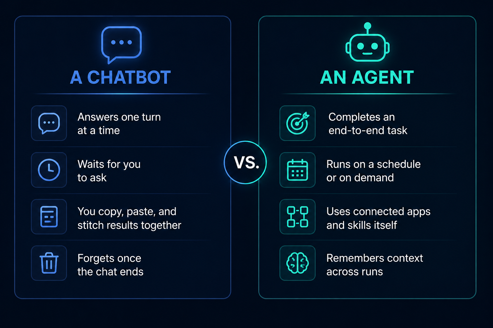
The agentic loop: plan, act, reflect
Give it a goal and it runs a loop on its own. Make a plan, use tools to act, then check its own work. Good enough? It responds. Not yet? It tries again.
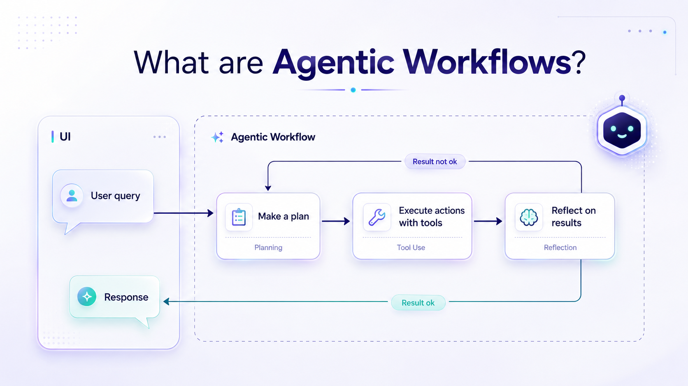
How an agent actually runs
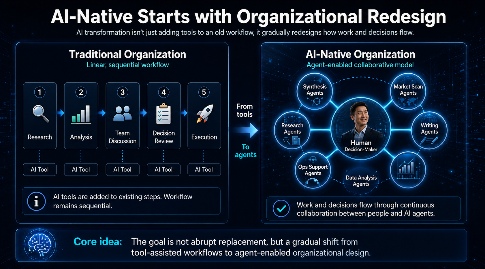
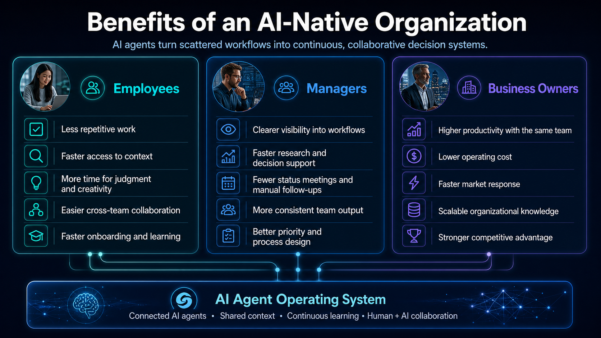
ChatGPT Business Agents: intro & creation
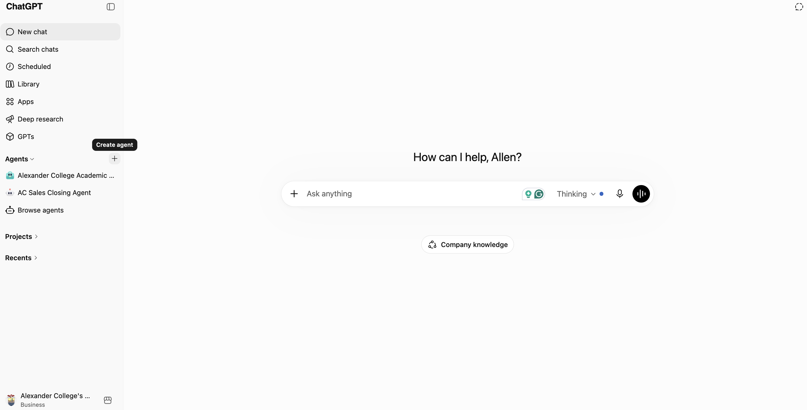
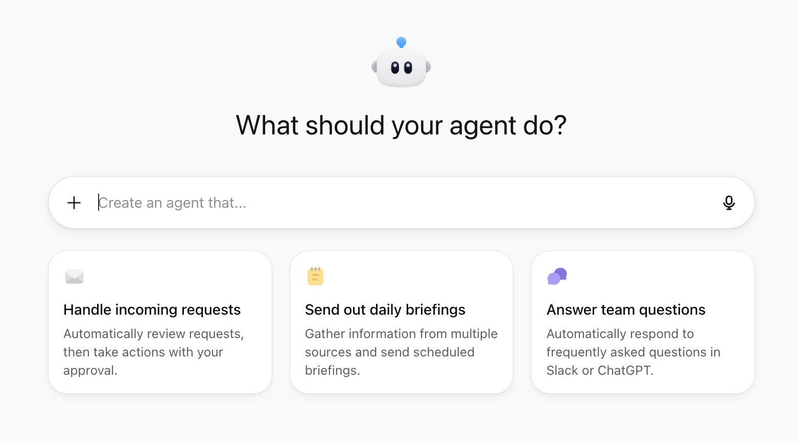
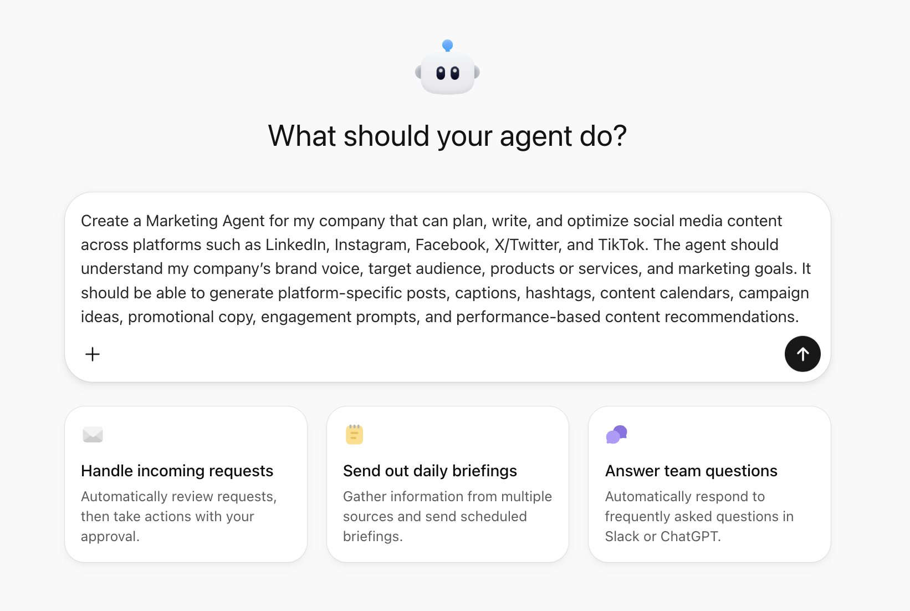
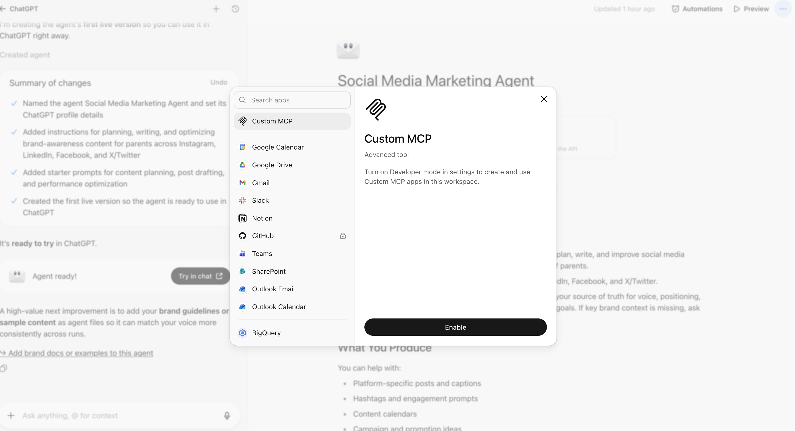
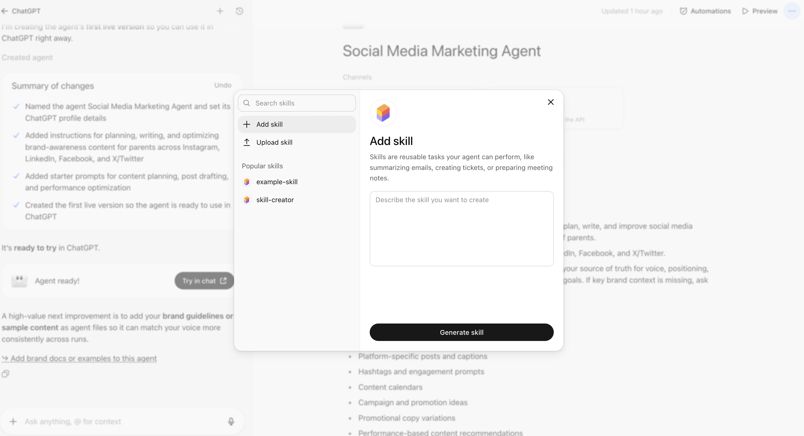
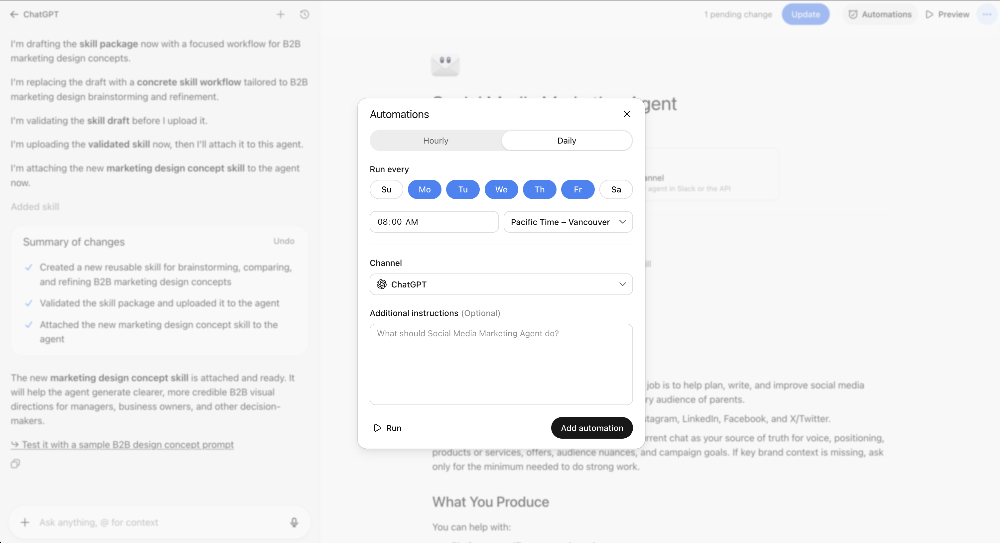
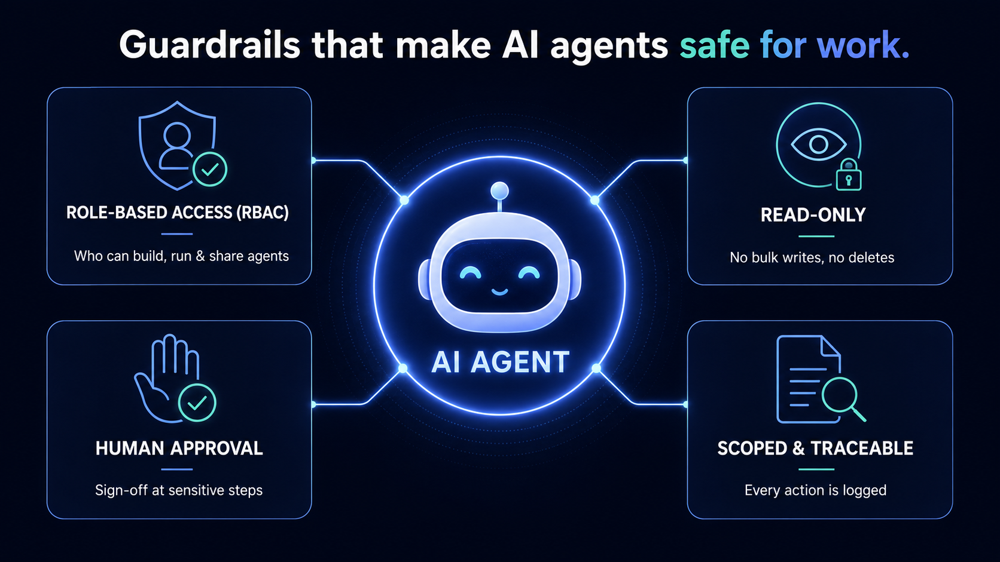
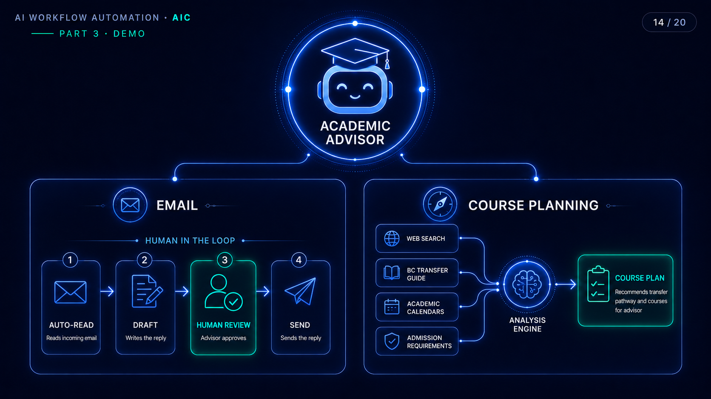
What it changes for advisors
Per student case
Down from 10-20 minutes, a 3-4× speed-up.
Many cases at once
Handles multiple student cases simultaneously, not one at a time.
Of advisor workload
Covers about 70% of an AC academic advisor's work.
The time saved goes straight back into helping more students.
How can agentic workflows benefit companies?
Social media content
Draft, repurpose, and schedule posts across channels from a single brief.
HR
Screen résumés, run onboarding, and answer policy questions on demand.
Accounting
Reconcile transactions, categorize spend, and draft monthly reports.
Sales
Follow up leads, keep the CRM current, and prep for every meeting.
Customer support
Triage tickets, draft replies, and route to the right person.
Operations
Gather metrics, clean data, and run cross-tool workflows on a schedule.
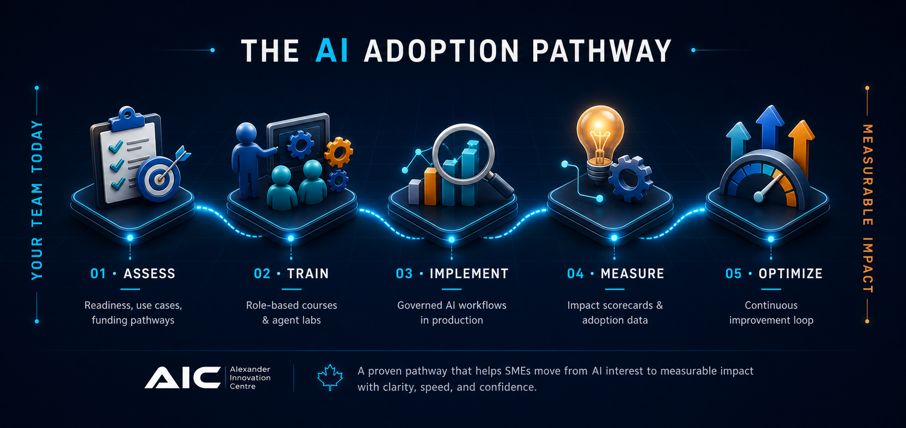
AIC helps enterprises adopt AI end-to-end, and helps SMEs with their government grant applications. Let’s find your first workflow.
B.C. Employer Training Grant (ETG)
The ETG helps eligible B.C. employers offset the cost of AI training delivered through the Alexander Innovation Centre, supporting AI adoption to improve productivity, streamline operations, and enhance business performance.
of eligible training costs
- Covered through the ETG
- Funds training for current employees & workforce development
Eligible employers
- Small, medium & large businesses
- Non-profit organizations
Training we deliver
- AI literacy & workforce readiness
- AI tools for productivity & operations
- Workflow automation & process improvement
- Responsible, practical AI implementation
Thank you · Q&A
Questions welcome, and scan to try the live demo.